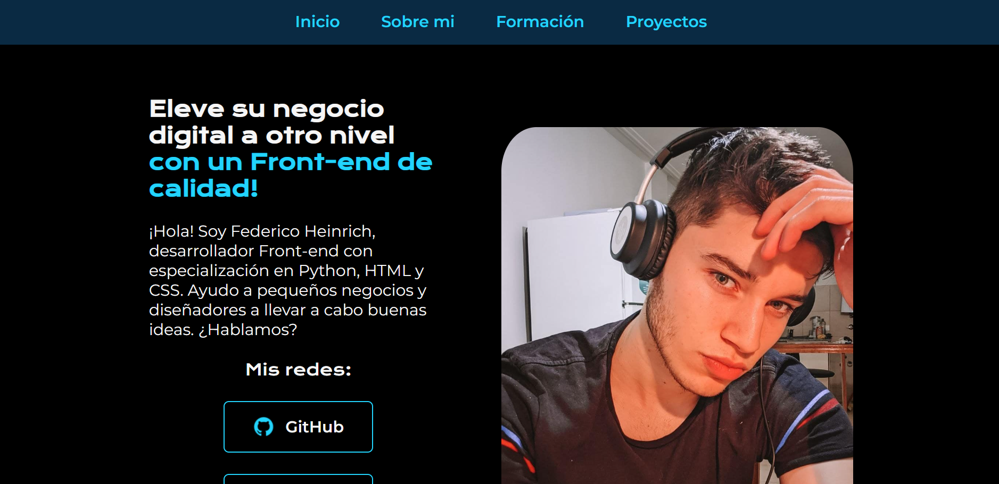
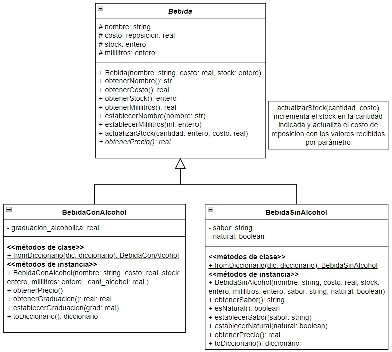

Mis Proyectos
Una muestra de mi trabajo como desarrollador

Portafolio Web Personal
Diseño y desarrollo de mi sitio web personal, creado desde cero para mostrar mis habilidades como desarrollador.
HTML5
CSS3
JavaScript
Challenge Alura Oracle ONE
Encriptador/desencriptador de texto desarrollado como parte del programa Oracle ONE con reglas específicas del challenge.
HTML
CSS
JavaScript

Ejercicios de APIs
Serie de prácticas realizadas para dominar el consumo de APIs y la presentación de datos externos de manera efectiva.
JavaScript
Flask
JSON
Python
Próximos Proyectos
Aplicación de gestión de tareas
Una aplicación web para organizar actividades diarias con funcionalidades de arrastrar y soltar.
Dashboard de datos
Visualización de datos obtenidos de APIs públicas presentados en un dashboard interactivo.
Clon de interfaz
Recreación de la interfaz de usuario de una aplicación popular para demostrar habilidades de maquetación.